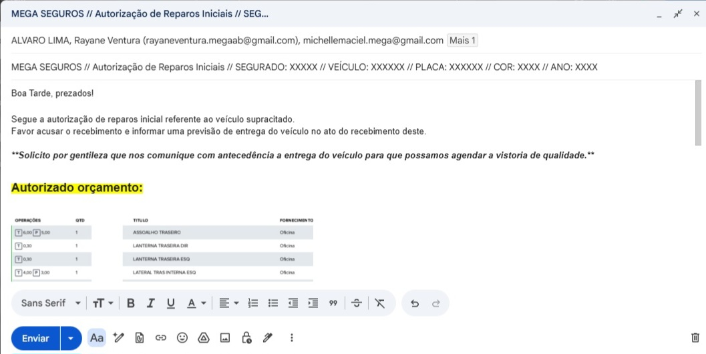
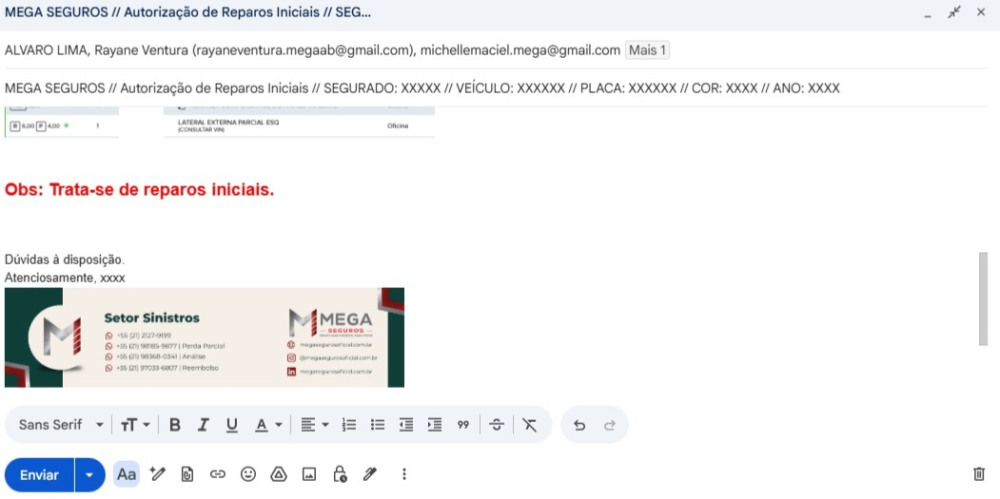
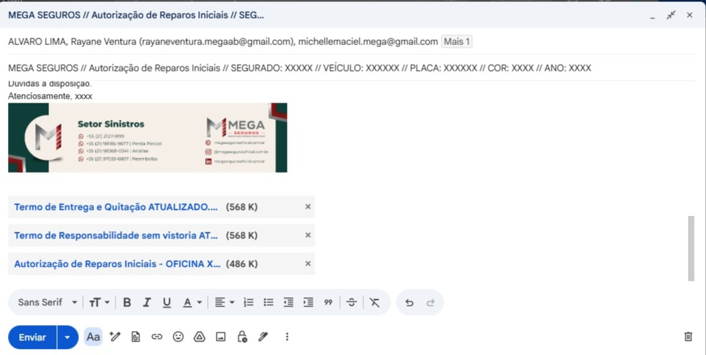
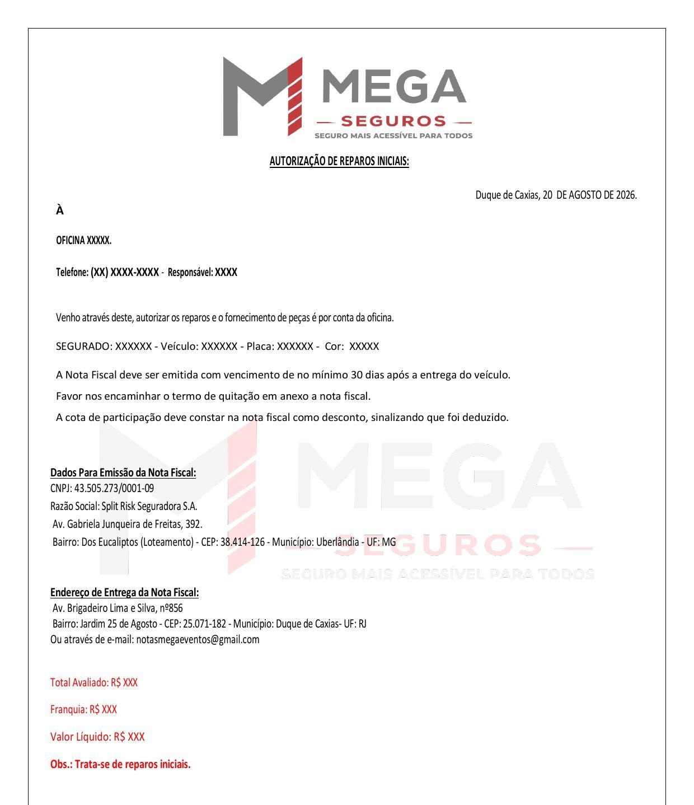
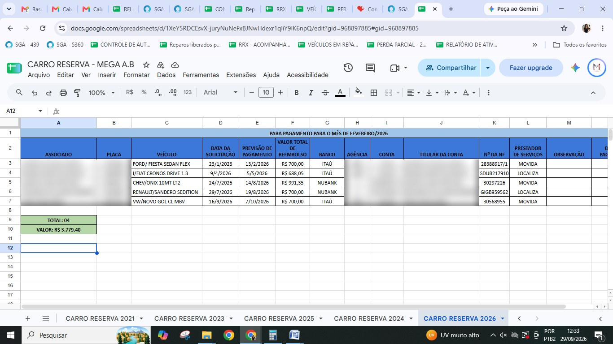

Autorização de Reparos Iniciais
Setor de Sinistros — Matriz Proteção. Passo a passo do processo de autorização de reparos iniciais junto às oficinas conveniadas, com o modelo de e-mail, o modelo do documento de autorização e as observações sobre o preenchimento das planilhas de controle. Inclui também o procedimento de carro reserva.
O que é a Autorização de Reparos Iniciais
É o documento e o e-mail enviados à oficina conveniada liberando o início dos reparos de um veículo sinistrado, informando o orçamento aprovado, os dados para emissão da nota fiscal e as condições de pagamento.
A Autorização de Reparos Iniciais é o documento + e-mail que libera a oficina a começar o reparo, com orçamento aprovado, dados para NF e condições de pagamento. É sempre a primeira liberação de um processo, sem complementos.
Passo a Passo do Processo
- 1 Montar o PDF de autorização, com o valor fechado e os dados do veículo preenchidos (segurado, veículo, placa, cor e ano)
- 2 Montar o e-mail de envio e anexar o PDF de autorização
- 3 Anexar também o Termo de Entrega e Quitação e o Termo de Responsabilidade sem vistoria
- 4 Enviar o e-mail para: Oficina, Supervisão, Gerência e e-mail do setor
- 5 Preencher as planilhas: Controle de Autorização de Reparos, Reparos Liberados pela Mega, Veículos em Reparos — Oficinas Feedback Atual, e Perda Parcial
- 6 Preencher as planilhas sempre com o valor líquido
Do PDF ao envio: montar a autorização com dados do veículo, anexar os termos obrigatórios, enviar para os quatro destinatários padrão e registrar nas quatro planilhas de controle, sempre pelo valor líquido.
Observações sobre as Planilhas
Planilha "Reparos Liberados pela Mega"
- ● O valor total é: valor dos reparos iniciais + valor do complemento − valor da cota
No caso de Reparos Iniciais
- ● No RESUMO, somar ao valor total a autorização inicial encaminhada
No caso de Reparos Complementares
- ● No RESUMO, somar ao valor total a autorização complementar encaminhada
A fórmula da planilha é sempre reparos iniciais + complemento − cota. No RESUMO, soma-se a autorização correspondente ao tipo de liberação: inicial ou complementar.
Modelo do E-mail de Envio
O assunto do e-mail segue o padrão: "MEGA SEGUROS // Autorização de Reparos Iniciais // SEGURADO: [nome] // VEÍCULO: [modelo] // PLACA: [placa] // COR: [cor] // ANO: [ano]". No corpo, é informado o pedido de confirmação de recebimento e a previsão de entrega do veículo, seguido da tabela com o orçamento autorizado.

Ao final do orçamento, quando o reparo é inicial (primeira liberação do processo), é incluída a observação em destaque:

O e-mail é finalizado com os três anexos obrigatórios:
- ● Termo de Entrega e Quitação atualizado
- ● Termo de Responsabilidade sem vistoria atualizado
- ● Autorização de Reparos Iniciais (PDF da oficina correspondente)

E-mail com assunto padronizado, corpo com pedido de confirmação e previsão de entrega, tabela do orçamento, observação de reparos iniciais (quando aplicável) e os três anexos obrigatórios: Termo de Entrega e Quitação, Termo de Responsabilidade sem vistoria e a Autorização em PDF.
Modelo do Documento de Autorização (PDF)
O PDF de autorização é enviado à oficina com os dados do segurado e do veículo, os dados para emissão da nota fiscal, o endereço de entrega da nota fiscal e os valores do orçamento (total avaliado, franquia e valor líquido).

O PDF traz dados do segurado, veículo, informações para emissão e entrega da nota fiscal, e os valores (total avaliado, franquia, valor líquido). NF com vencimento mínimo de 30 dias após a entrega, e a cota sempre descontada e sinalizada na nota.
Carro Reserva: Benefício e Documentação
A solicitação de benefício de carro reserva pode ser feita mediante sinistro em aberto junto à Mega.
Valores do benefício
| Período | Valor |
|---|---|
| 7 dias | R$ 700,00 |
| 15 dias | R$ 1.000,00 |
| 30 dias | R$ 1.400,00 |
Documentos necessários
- ● CNH
- ● CRLV
- ● Cópia dos dois últimos boletos pagos
- ● Contrato da locação ABERTO e FECHADO
- ● Nota de serviço (NF's)
- ● Comprovante de pagamento à locadora
- ● Dados bancários do segurado, na qual o mesmo seja titular (apresentar comprovante de dados bancários)
- ● Preencher o formulário de reembolso
O carro reserva é pedido com sinistro em aberto e paga R$ 700,00 (7 dias), R$ 1.000,00 (15 dias) ou R$ 1.400,00 (30 dias). A solicitação só é feita depois da devolução do carro alugado, com CNH, CRLV, dois últimos boletos pagos, contrato aberto e fechado, NF, comprovante de pagamento à locadora, dados bancários do titular e formulário de reembolso.
Carro Reserva: Autorização e Entrega ao Financeiro
- 1 Após a recepção da documentação, preencher o FORMULÁRIO DE AUTORIZAÇÃO FINANCEIRA.
- 2 Preencher a planilha para o setor financeiro (Carro Reserva - Mega A.B, na aba do ano).
- 3 Entregar a autorização assinada pela supervisão junto com a xerox da documentação abaixo para o setor financeiro.

Xerox para o setor financeiro
- ● Formulário de Reembolso
- ● CNH
- ● CRLV
- ● Contrato Fechado
- ● Comprovante de Dados Bancários
Com a documentação recebida, preencher o formulário de autorização financeira e a planilha de carro reserva. Depois, entregar ao Financeiro a autorização assinada pela supervisão junto com a xerox do formulário de reembolso, CNH, CRLV, contrato fechado e comprovante de dados bancários.